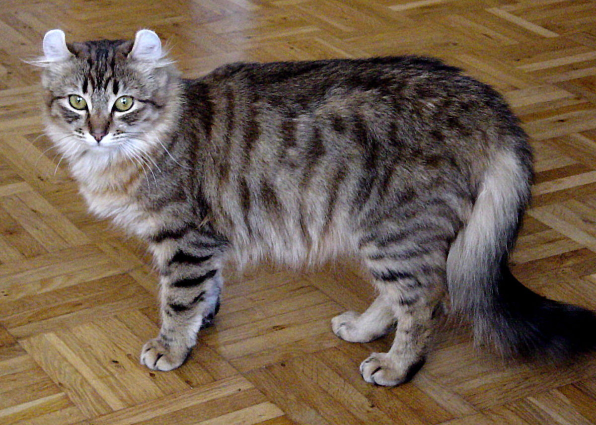

The first American Curls appeared as strays on the door step of the Rugas in Lakewood, California in June 1981.[1] The black female, named Shulamith, gave birth to a litter of cats with the same curled ears, and so became the ancestor of all American Curls today.[2][3][4] In 1986, an American Curl was exhibited at a cat show for the first time, and in 1992, the longhaired American Curl was given championship status by The International Cat Association (TICA). In 1999, the American Curl became the first breed admitted to the Cat Fanciers' Association (CFA) Championship Class with both longhair and shorthair divisions.[6]
The American Curl is a medium-sized cat (5–10 lbs), and does not reach maturity until 2–3 years of age. They are strong and healthy.
American Curl kittens are born with straight ears, which begin to curl within eighty-two days. After four months, their ears will not curl any longer, and should be hard and stiff to the touch. A pet quality American Curl may have almost straight ears, but showcats must have ears that curl in an arc between 90 and 180 degrees. A greater angle is preferable, but cats will be disqualified if their ears touch the back of their skulls.[5]
Both longhaired and shorthaired American Curls have soft, silky coats which lie flat against their bodies.[6] They require little grooming and enjoy spending time with their owners.
The American Curl, while still an uncommon breed, is found across the world in the United States, Spain, France, Japan, Russia, and many other countries.
References
This article uses material from the Wikipedia article "American Curl", which is released under the Creative Commons Attribution-Share-Alike License 3.0.
http://www.animalplanet.com/breedselector /catprofile.do?id=1010
"Profile American Curl". The Cats Fanciers' Association, Inc. Retrieved 2012-05-24.
Picture: "American curl 2". Licensed under CC BY-SA 3.0 via Wikimedia Commons.
{kind=link}